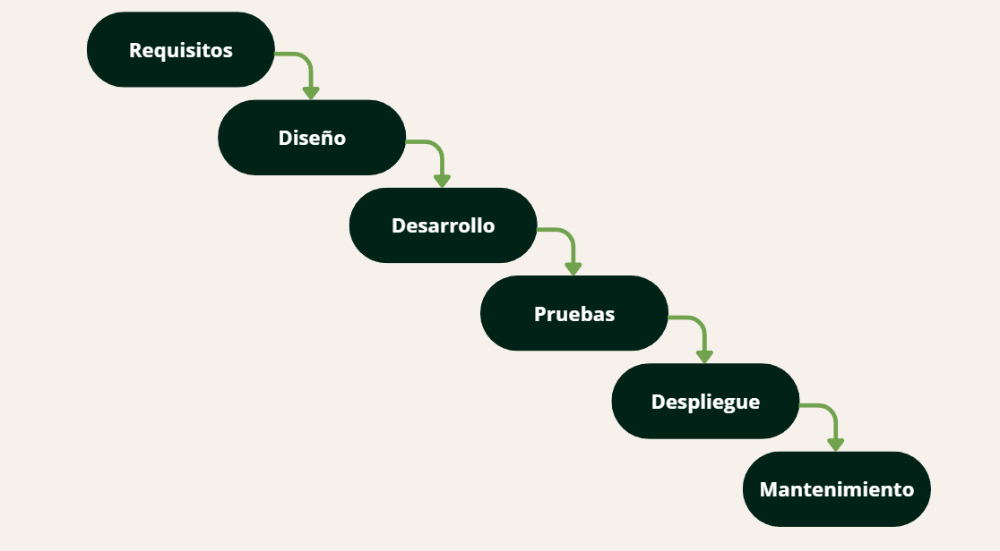
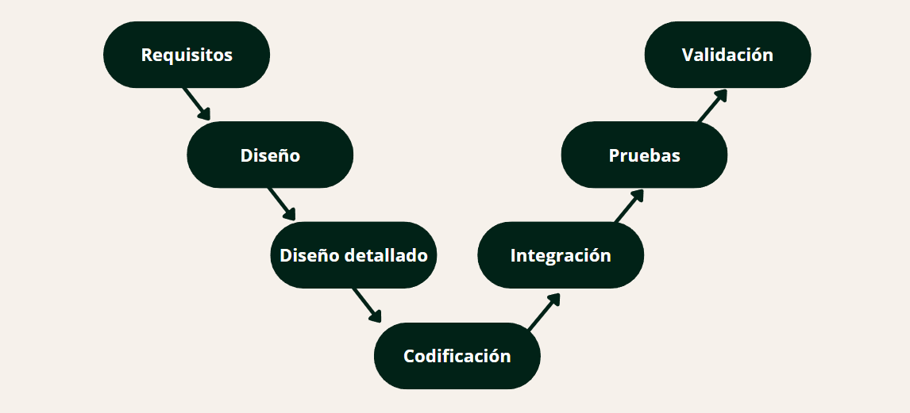
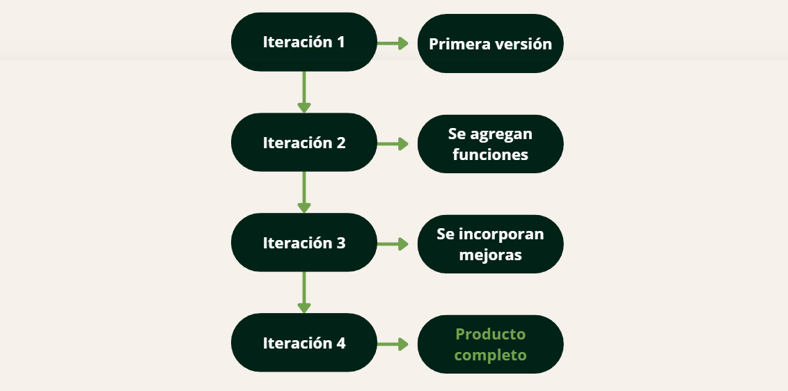

PROCESOS DE DESARROLLO DE SOFTWARE
Ciclo de Vida del Desarrollo de Software (SDLC)
El Ciclo de Vida del Desarrollo de Software organiza las actividades necesarias para construir y mantener un sistema. Cada etapa cumple una función específica y permite avanzar de manera ordenada hacia un producto de software funcional y de calidad.
01. Requisitos
Se identifican las necesidades, problemas y requisitos que debe cumplir el software. Se define qué se necesita desarrollar y cuáles son los objetivos del sistema.
Permite definir qué debe hacer el sistema antes de comenzar su desarrollo.
02. Diseño
Se define cómo estará construido el software, estableciendo su estructura, componentes, funcionamiento y organización.
Sirve como guía para construir el software de acuerdo con los requisitos establecidos.
03. Desarrollo
Se desarrolla el software mediante la escritura del código, transformando el diseño en un sistema funcional.
Sirve como guía para construir el software de acuerdo con los requisitos establecidos.
04. Pruebas
Se comprueba que el software funcione correctamente y que cumpla con los requisitos establecidos. También se buscan y corrigen errores.
Permite encontrar problemas antes de que el sistema llegue a los usuarios.
05. Despliegue
El software se instala y se pone en funcionamiento en el entorno donde será utilizado por los usuarios.
Permite que el sistema pueda comenzar a utilizarse.
06. Mantenimiento
Se realizan correcciones, actualizaciones y mejoras para mantener el software funcionando y adaptarlo a nuevas necesidades.
Permite mantener el sistema funcionando correctamente y adaptarlo a nuevas necesidades.
MODELOS TRADICIONALES
Los modelos tradicionales permiten organizar y planificar el desarrollo de software mediante diferentes formas de trabajo. Cada modelo establece una manera particular de ordenar las etapas del desarrollo y puede resultar más adecuado según las características del proyecto.
Modelo Cascada
¿Qué es?
Es un modelo en el que el desarrollo se organiza en etapas consecutivas. Cada etapa se completa antes de avanzar a la siguiente.
Ventajas:
- Es sencillo de comprender y organizar.
- Permite planificar las etapas desde el comienzo.
- Cada etapa tiene objetivos claramente definidos.
- Facilita la documentación del proyecto.
Desventajas:
- Es difícil volver a etapas anteriores una vez avanzadas.
- Los cambios pueden resultar costosos.
- Los errores pueden descubrirse recién en etapas posteriores.
- No es adecuado cuando los requisitos cambian frecuentemente.
¿Cuando es ideal utilizarlo?
Es conveniente cuando los requisitos están bien definidos desde el inicio y se espera que sufran pocos cambios durante el desarrollo.
Ilustraciones de Modelos Tradicionales
Modelo Cascada

El desarrollo avanza secuencialmente de una etapa a la siguiente.
Modelo en V

Cada etapa de desarrollo se relaciona con actividades de verificación y validación.
Modelo iterativo e incremental

El software se construye progresivamente mediante iteraciones e incrementos.